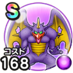

ゼッペル
ほこらまれにいきなりマジックブーストこころ最大コスト+4じゅもんダメージ+7%スキルの暴走ダメージ+5%魔力の暴走率+3% / 9.0点
くわしい特徴
【ランク特殊効果】 まれにいきなりマジックブーストこころ最大コスト+4じゅもんダメージ+7%スキルの暴走ダメージ+5%魔力の暴走率+3%

ほこらまれにいきなりマジックブーストこころ最大コスト+4じゅもんダメージ+7%スキルの暴走ダメージ+5%魔力の暴走率+3% / 9.0点
【ランク特殊効果】 まれにいきなりマジックブーストこころ最大コスト+4じゅもんダメージ+7%スキルの暴走ダメージ+5%魔力の暴走率+3%